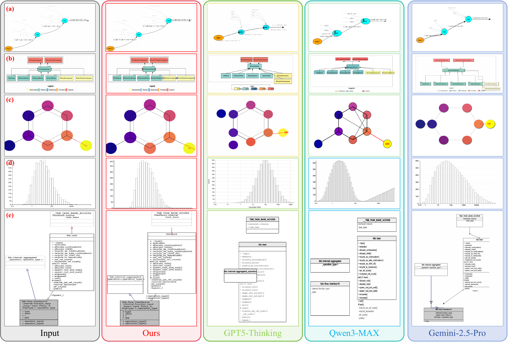
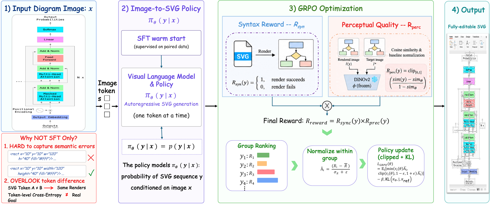
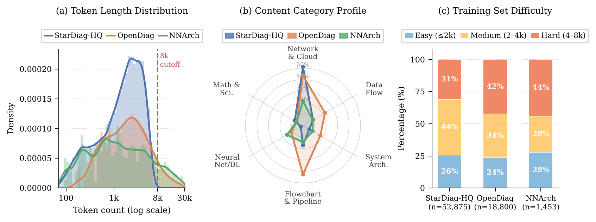
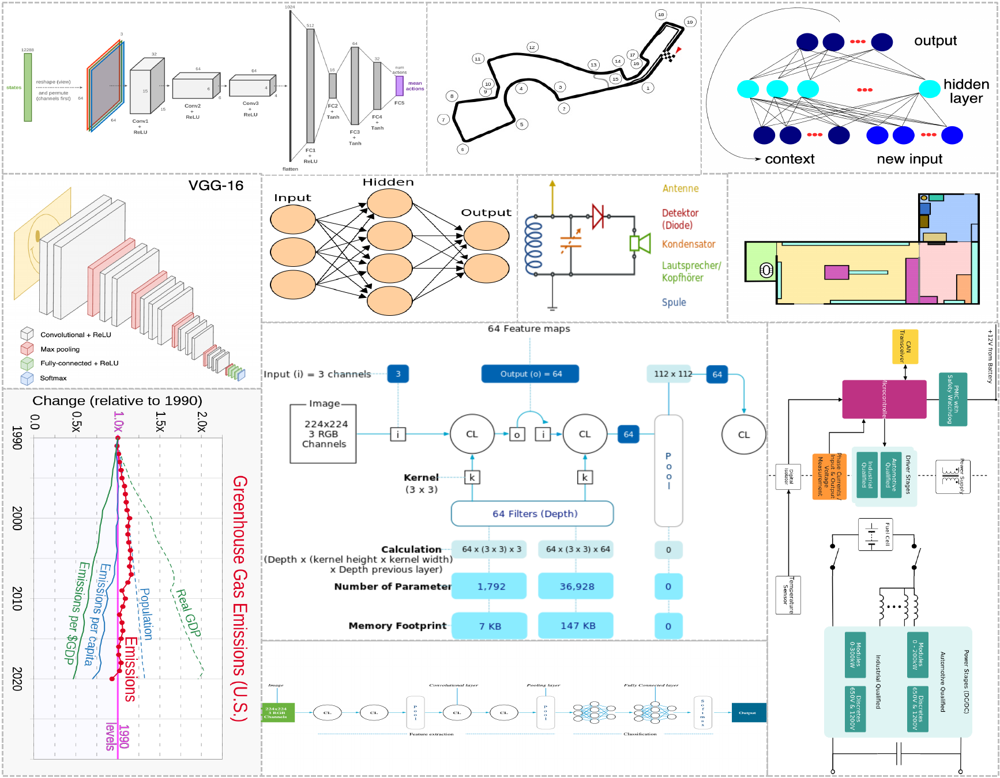
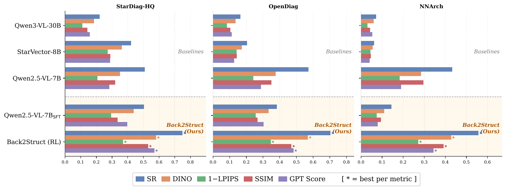
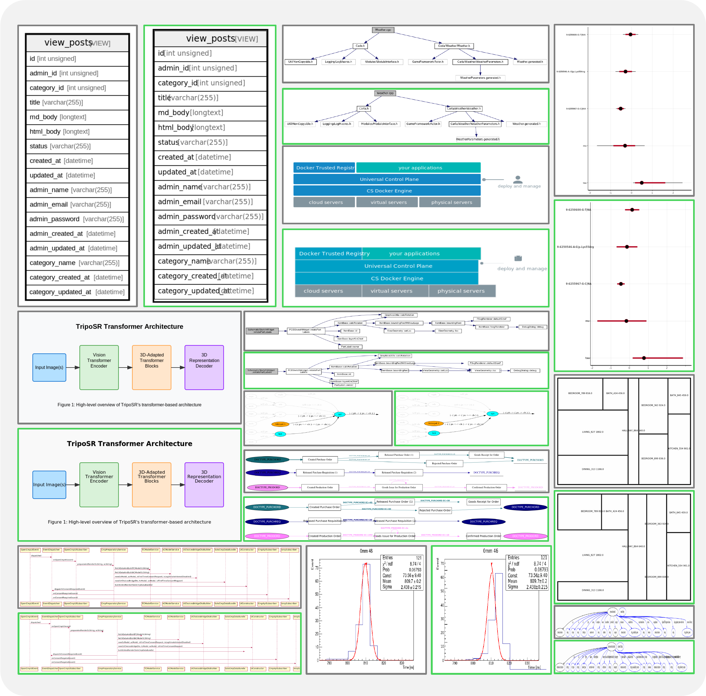
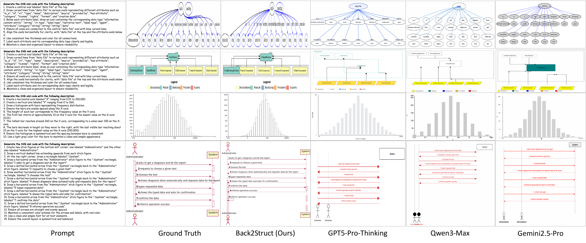

Recovering editable, object-level SVG/XML code from images of structured graphics.

bash convert_figs.sh to render comparison.png.Structured images — diagrams, charts, and flowcharts — are inherently symbolic and can be compactly represented in an editable format, yet in practice they are shared as raster images and are no longer graphically editable. We present Back2Struct, which "makes structured images editable again" by directly recovering vector graphics code (SVG / XML) from image representations. Given an image of a structured graphic, Back2Struct predicts semantically object-level SVG/XML that explicitly encodes text, shapes, topology, and layout — rather than performing low-level pixel vectorization — so the code can be imported straight into tools like PowerPoint to edit, restyle, and reuse content while preserving structural fidelity. Beyond supervised fine-tuning on ground-truth SVG token sequences, we further optimize Back2Struct with reward-based learning using a composite reward that jointly encourages SVG/XML compilability, length consistency with the reference code, and structural/semantic similarity to the input. Experiments show Back2Struct improves accuracy, editability, validity, and user alignment over strong baselines.
Three contributions toward editable structured-image generation.
84,121 paired structured raster images and their SVG/XML code, plus a 1,000-sample evaluation benchmark — a large-scale, high-value corpus for editable structured-image generation.
A framework that recovers semantically meaningful, object-level vector code — explicitly modeling text, shapes, topology, and layout, not pixels.
A composite reward (syntactic validity, length fidelity, and perceptual quality) optimized with GRPO improves deployment-time validity and faithfulness.
Object-level SVG generation, warm-started by SFT and refined by GRPO.

bash convert_figs.sh to render framework.png.We cast structured-image recovery as object-level vector-code generation: instead of tracing pixels, the model emits SVG/XML primitives that name the actual shapes, text, connectors, and their arrangement. The policy is first supervised-fine-tuned on ground-truth SVG sequences, then optimized with reinforcement learning (GRPO) using a reward tailored to how the model is deployed.
The composite reward combines three complementary signals — syntactic validity (the output must compile/render), length fidelity (consistency with the reference code length), and perceptual quality (structural/semantic similarity between the rendered prediction and the target image). Group-relative advantages then steer the policy toward outputs that are simultaneously valid, concise, and visually faithful.
84K paired image–code examples across three sources, with a 1,000-sample held-out benchmark.
| Subset | Train (full) | Train (≤8,192 tok) | Benchmark |
|---|---|---|---|
| StarDiag-HQ | 52,875 | 52,875 | 569 |
| OpenDiag | 27,953 | 18,800 | 334 |
| NNArch | 3,293 | 1,453 | 97 |
| Total | 84,121 | 73,128 | 1,000 |
The benchmark is split by ground-truth SVG length into easy (≤2,048 tok), medium (2,048–4,096), and hard (>4,096) tiers.

bash convert_figs.sh to render dataset_overview.png.
bash convert_figs.sh to render data_samples.png.On StructHub, Back2Struct is the strongest open/trained model — and on renderable outputs it rivals frontier closed models many times its size.
| Model | SR ↑ | DINO ↑ | LPIPS ↓ | SSIM ↑ | GPT ↑ |
|---|---|---|---|---|---|
| Qwen3-VL-30B-A3B | 18.8 | 0.1566 | 0.9067 | 0.1201 | 13.29 |
| StarVector-8B | 31.4 | 0.2694 | 0.7936 | 0.2170 | 21.05 |
| Qwen2.5-VL-7B | 52.3 | 0.3527 | 0.7834 | 0.3276 | 27.56 |
| Qwen2.5-VL-7BSFT | 42.8 | 0.3715 | 0.7403 | 0.2891 | 33.49 |
| Back2Struct (RL) | 71.5 | 0.5622 | 0.6473 | 0.4966 | 51.85 |
Back2Struct lifts render success from 52.3% (base) to 71.5% and improves every image and text metric.
| Model | DINO ↑ | LPIPS ↓ | SSIM ↑ | GPT ↑ |
|---|---|---|---|---|
| Qwen2.5-VL-7B | 0.6749 | 0.5856 | 0.6270 | 52.73 |
| Qwen3-VL-30B-A3B | 0.8347 | 0.5027 | 0.6402 | 70.88 |
| Gemini-2.5-Pro | 0.8855 | 0.4648 | 0.6532 | 77.95 |
| GPT-5 | 0.8852 | 0.4350 | 0.6573 | 77.21 |
| Back2Struct (7B) | 0.8697 | 0.3896 | 0.6738 | 78.63 |
On compiled outputs, Back2Struct achieves the best GPTScore, SSIM, and LPIPS — ahead of GPT-5 and Gemini-2.5-Pro, at a fraction of the size.

bash convert_figs.sh to render performance.png.
bash convert_figs.sh to render qualitative.png.
bash convert_figs.sh to render text2svg.png.@article{yan2026back2struct,
title = {Back2Struct: Making Structured Images Editable Again},
author = {Yan, Pengyu and Wu, Yixin and Tian, Yunjie and Doermann, David},
year = {2026},
note = {Preprint}
}